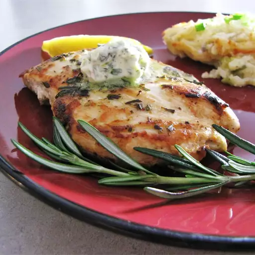
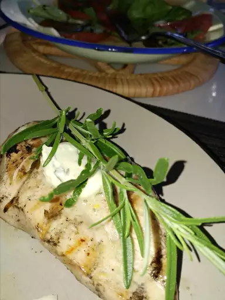
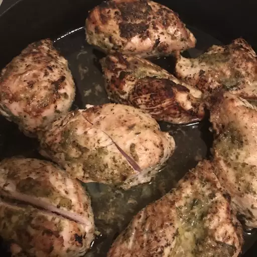
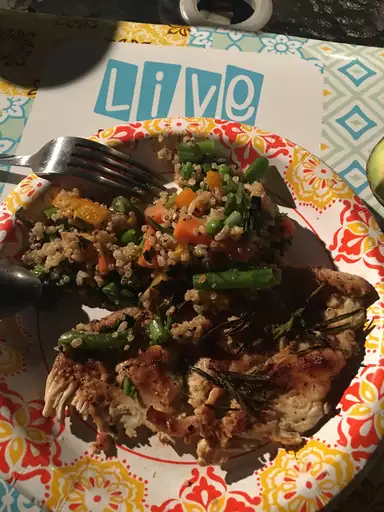
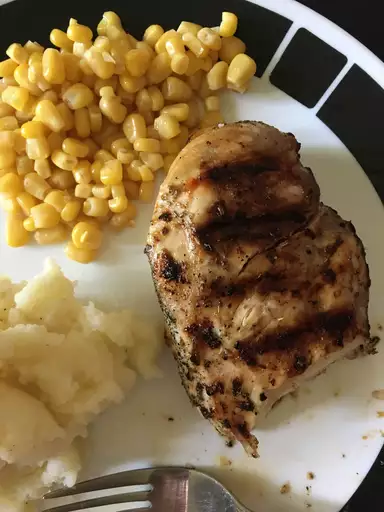

Rosemary Lemon Grilled Chicken
This simple, sensational marinade and sauce for grilled chicken is made with lemon, garlic, rosemary, and butter. Separate the marinade into thirds: 1/3 for marinating, 1/3 for basting, and 1/3 for topping.
Submmited by
ANGELLACHELLE
Updated on November 22, 2024.





Ingredients
- Chicken
- Lemon
- Griller
- A relative called Rosemary (optional)
- Put a lot of lemon to the Chicken
- Put the Chicken in the griller
- Wait arround 15 minutes
- While you wait, you can talk whit Rosemary (optional)
Home